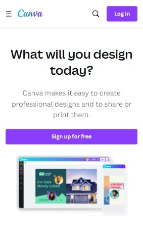
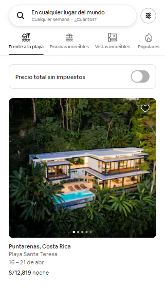

L02: Design Principles Document
Visual Hierarchy
What is a visual hierarchy in web design?
Visual hierarchy in web design refers to the arrangement and presentation of interface elements in order of importance so that users can easily and quickly scan the information they need, click and purchase a product or service from the website without issues.
Canva
Canva Home Page Canva applies the visual hierarchy in the H1 text, the question it shows us catches our attention and has a great impact on the visualization of the elements of the web page.
Rule of Thirds
What is the rule of thirds?
The rule of thirds is used in web design to create balance within the images or other elements of the landing page. Its main principle is that if elements on the page reside within a third of the page, then it is more aesthetically pleasing to viewers than if it was zoomed-in and centered.
Amazon
Amazon Home PageOn the Amazon home page the rule of thirds is used to strategically distribute visual and content elements on the screen. Product images and other important visual representations are likely to align with the intersection points of the imaginary lines of the rule of thirds to create visual impact and an attractive composition.
White Space and Clean Design
What is White Space in Web Design?
White space in web design refers to the empty areas between text, images, buttons, and other elements on a webpage. It's a crucial design element that provides visual breathing room, improves readability, and enhances user experience.
Airbnb
Airbnb Home Page Airbnb applies white space to visually separate key elements such as text, images and buttons, improving readability and user experience.